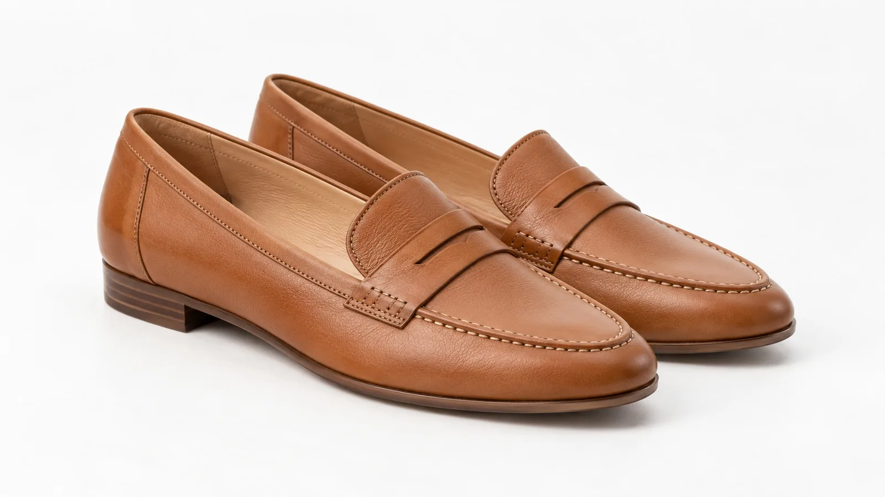
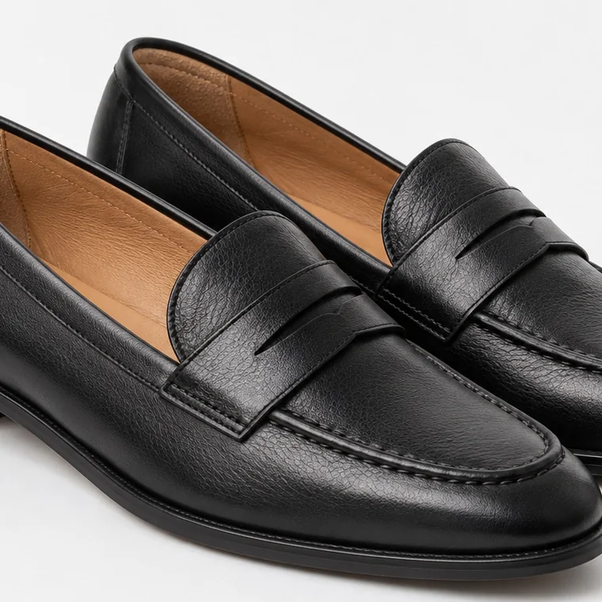
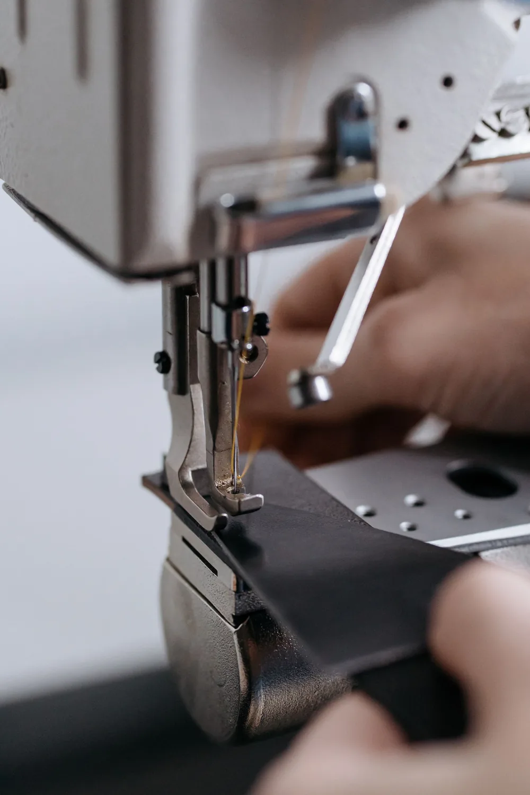

Tradición en cada paso
Zapatos de cuero por fuera y por dentro
Más de 65 años de fabricación familiar. Calzado de cuero vacuno forrado en cuero vacuno, para probártelo en Av. Santa Fe 1751 o pedirlo desde acá.

En la foto
Mocasín Santa Fe · Suela
- Capellada
- Cuero vacuno
- Forro
- Cuero vacuno
- Taco
- 2 cm
- Talles
- 35 al 41
$128.000
Botas, balerinas, mocasines y sandalias
Más modelos, el mismo cuero
Por dentro, también cuero
Lo que no se ve también es cuero vacuno: el forro que toca tu pie, la plantilla y cada costura que los une.
- 01
Afuera, cuero vacuno
La capellada toma la forma de tu pie con el uso.
- 02
Adentro, cuero vacuno
El forro también es cuero: es lo que tu pie toca todo el día.
- 03
De nuestra fábrica
Cada par se corta, se apara y se arma en la fábrica familiar.

Medí tu pie y encontrá tu talle
- Parate sobre una hoja con el talón contra la pared.
- Marcá la punta del dedo más largo y medí con una regla.
- Mejor a la tarde y con la media que vas a usar.
Talle37
Tu talle es 37
Pie de 23,7 a 24,3 cm
Tabla orientativa de talles argentinos. Si quedás entre dos, escribinos y te asesoramos.
Más de 65 años haciendo zapatos en familia
Apertura es una fábrica familiar de calzado. Hace más de 65 años que trabajamos el cuero vacuno con la tradición de siempre y modelos a la vanguardia, y hoy los mostramos en nuestro local de Av. Santa Fe y en esta tienda.
- 01
Corte
El cuero se corta pieza por pieza, afuera y adentro.
- 02
Aparado
La capellada y el forro se cosen juntos.
- 03
Armado
El zapato toma forma en la horma y se une a la suela.

Galería: el cuero de cerca
Arrastrá para ver más y tocá una foto para verla grande.
Vení a probártelos a Santa Fe
Estamos en Av. Santa Fe 1751, en Barrio Norte. Si querés consultar por un modelo o un talle antes de venir, escribinos.
- Dirección
- Av. Santa Fe 1751, Barrio Norte, CABA
- +54 9 11 5817-4530
- Teléfono del local
- 4816-3712
- @aperturabsas